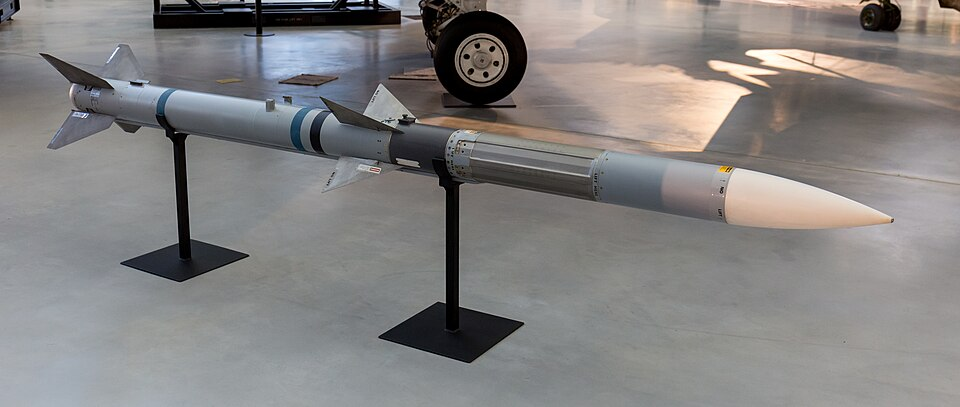
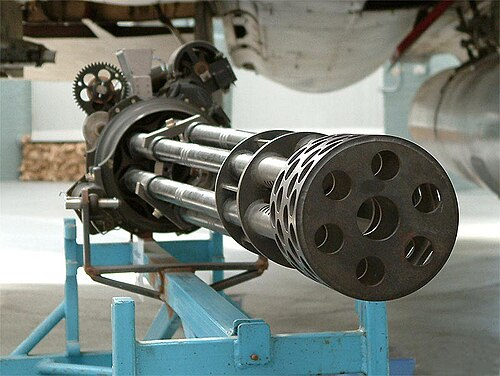

he General Dynamics (now Lockheed Martin) F-16 Fighting Falcon is an American single-engine supersonic multirole fourth-generation fighter aircraft developed by General Dynamics and produced by multiple companies, including General Dynamics until 1993 and Lockheed Martin until 2017.[3] Designed as an air superiority day fighter, it evolved into a successful all-weather multirole aircraft with over 4,600 built since 1976.[4] Although the original versions are no longer in production, improved versions of the Lockheed Martin F-16V Viper family are being built and upgraded for export in a new production facility of Lockheed Martin.[5][6] As of 2025, it is the world's most common fixed-wing aircraft in military service, with 2,084 from the F-16 family operational.
Air superiority capabilities
---->AIM-120

The AIM-120[a] Advanced Medium-Range Air-to-Air Missile (AMRAAM) (/æmræm/ AM-ram) is an American beyond-visual-range air-to-air missile capable of all-weather day-and-night operations. It uses active transmit-receive radar guidance instead of semi-active receive-only radar guidance.
The kill probability is determined by several factors, including aspect (head-on interception, side-on or tail-chase), altitude, the speed of the missile and the target, and how hard the target can turn. Typically, if the missile has sufficient energy during the terminal phase, which comes from being launched at close range to the target from an aircraft with an altitude and speed advantage, it will have a good chance of success.[citation needed] This chance drops as the missile is fired at longer ranges as it runs out of overtake speed at long ranges, and if the target can force the missile to turn it might bleed off enough speed that it can no longer chase the target. Operationally, the missile, which was designed for beyond visual range combat, has a Pk of 0.59. The targets included six MiG-29s, a MiG-25, a MiG-23, two Su-22s, a Galeb, and a US Army Blackhawk that was targeted by mistake.
---->M61 Vulcan

The M61 Vulcan is a hydraulically, electrically, or pneumatically driven, six-barrel, air-cooled, electrically fired Gatling-style rotary cannon which fires 20 mm × 102 mm (0.787 in × 4.016 in) rounds at an extremely high rate (typically 6,000 rounds per minute). The M61 and its derivatives have been the principal cannon armament of United States military fixed-wing aircraft for over sixty years.
Each of the cannon's six barrels fires once in turn during each revolution of the barrel cluster. The multiple barrels provide both a very high rate of fire—around 100 rounds per second—and contribute to prolonged weapon life by minimizing barrel erosion and heat generation.[11] The average time between jams or failures is in excess of 10,000 rounds, making it an extremely reliable weapon.[12] The success of the Vulcan Project and its progeny, the very-high-speed Gatling gun, has led to guns of the same configuration being referred to as "Vulcan cannons", which can sometimes confuse nomenclature on the subject.
Most aircraft versions of the M61 are hydraulically driven and primed electrically. The gun rotor, barrel assembly and ammunition feed system are rotated by a hydraulic drive motor through a system of flexible drive shafts. The round is fired by an electric priming system where an electric current from a firing lead passes through the firing pin to the primer as each round is rotated into the firing position.[13]
Practically no powered rotary cannon is supplied with sufficient ammunition for a full minute of firing, due to its weight (at 6,000 rpm, the projectiles alone would represent a mass of about 600 kg (1,300 lb) for one minute of firing; and by including the brass shell, filling and primer the weight is slightly double that at 1,225 kg (2,701 lb)). In order to avoid using the 600 to 1,000 rounds carried by aircraft all at once, a burst controller is generally used to limit the number of rounds fired at each trigger pull. Bursts of from two or three up to 40 or 50 can be selected.[19] The size of the airframe and available internal space limits the size of the ammunition drum and thus limits the ammunition capacity. When vehicle-mounted, the only limiting factor is the vehicle's safe carry weight, so commensurately larger ammo storage is available.